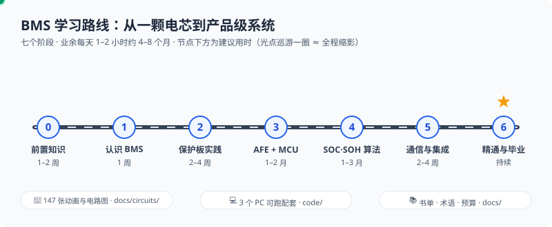

🎯 少走弯路：从一颗电芯到产品级 BMS 的中文自学路线

按记忆→创造六层选入口。零基础不用先读完七阶段表，从理解层第一节进。
第 0 天 30 分钟小胜利 + 14 天中文路径 + 打卡清单——零基础从这里进，别从资料海进。
带着具体目标进来的走这里：做保护板 / 读商用 BMS / 只做算法 / 逆向协议 / 自研智能 BMS / 冲产品级，六条捷径只列必读小节。
前置知识 → 认识 BMS → 保护板 → AFE+MCU → SOC/SOH 算法 → 通信集成 → 精通毕业，自测题附折叠答案。
功率回路 / 采样链与 AFE / 充电均衡计量 / 系统安全与量产 / 电路板绘制五篇深度解析，147 张 SMIL 动画与电路图网页端自动播放。
SOC 估算器对比、协议帧解析、固件状态机——PC 上即可运行，CI 守护，没电池也能动手。
BMS 主控甜点选型（F3/G4）、外设到任务的映射、HAL/LL/寄存器取舍、7 条咬过人的坑与参考工程。
通信网关定位与 C3 选型、BLE/MQTT/OTA 落地、睡眠电流账本、6 条著名坑与 syssi/diyBMS 参考工程。
按阶段找书单、视频与开源项目；推荐资料标注难度、建议初读时间、语言和获取条件，先判断适不适合再打开。
入门科普 + 系统课程（本页下方内嵌播放）：先看视频建立直觉，再回教程正文做题。
公式与单位、代码示例阈值、按症状排障；每项直达原章节，读电路和调代码时随手查。
配合仓库内 BMS书籍清单.md 使用：书单是主线，本页视频用于建立直观认识。所有播放器均需联网；YouTube 需要可访问的网络环境。英文视频可看中文字幕：播放器里点 CC 开字幕后，⚙设置 → 字幕 → 自动翻译 → 中文（简体）。
YouTube · 英文原声（按页首说明开 CC 自动翻译中文；该视频有人工字幕轨，翻译质量较好）· 160 万+ 播放 · 硬件视角讲 BMS 保护板、均衡、DIY 与成品方案取舍。对应阶段 1 §1.6。 · 原页 ↗
YouTube · 英文原声（CC 自动翻译中文；有人工字幕轨）· 动画讲解 BMS 工作原理与均衡拓扑，对应书单条目 4（Andrea）的均衡章节，也对应阶段 1 §1.8。 · 原页 ↗
B 站 · 中文硬件实战向，保护板回路、MOS 控制、项目经验。对应阶段 3 §3.1。 · 原页 ↗
YouTube · 专项课第二门《Equivalent Circuit Cell Model Simulation》的开课视频（公开预览片段；正课需注册旁听），可先感受风格。对应阶段 4 §4.1，公式以仓库讲义为准。 · 原页 ↗
B 站 · 真零基础起步：认识 BMS → SOC 与电压关系 → 电压/温度采样 → 主流拓扑与硬件架构 → 均衡 → SOC/SOH 代码详解 → CAN 通信 → 高压上电流程。25 集约 4.8 小时，11.7 万播放、5602 收藏（2026-10-04 view API 核实）。UP 主"智造辅导员"为转载号（简介注明"转载来源于网络"、资料需私信获取），内容本身完整成体系，配套资料引流自行甄别。默认播第 1 集，集数在播放器内切换。对应阶段 0「本阶段怎么读」。 · 原页 ↗
B 站 · SOC/SOH、均衡控制、CAN 通信。UP 主"慧识学堂"的 70 集（约 49 小时）合集，疑似付费课程二次搬运，仅当中文补充材料、注意甄别。默认播第 1 集，集数在播放器内切换。 · 原页 ↗
B 站 · 放在阶段 1 §1.1：先把「为什么要有 BMS」讲成一个小项目，再读串联和木桶。 · 原页 ↗
B 站 · 中文。保护板原理和开源硬件篇对应阶段 2 §2.1，DW01 对应 §2.2。阈值以手头手册为准。 · 保护板原理 ↗ · 开源硬件 ↗ · DW01 ↗
B 站 · 中文，SOC / SOH / SOP。对应阶段 4 §4.1。 · 原页 ↗
YouTube · 英文，可选。拆开一块商用 JK 板来看，对应阶段 5 §5.8 动手读商用 BMS。它不是协议文档。 · 原页 ↗
YouTube · 英文，可选。官方 4 分钟，讲 3–16 串监测、库仑计和保护。对应详解② §5 与阶段 3 §3.2。精度以手册为准。 · 原页 ↗
YouTube · 英文，可选。评估板出镜，讲硬件怎么接、参数怎么设。对应详解② §5。这不是放进仓库的照片，也不是 isoSPI 线束。串数以料号手册为准。 · 原页 ↗
YouTube · 英文，可选。帧、优先级和 DBC 解码的入门。对应阶段 5 §5.4，不是某一家 BMS 的协议文档。 · 原页 ↗
YouTube · 英文，可选。这家接触器自带半导体旁路。对应详解④ §1.3 与阶段 6 §6.1.2。教材主线仍是电阻预充，不要把片子当成唯一做法。 · 原页 ↗
BMS书籍清单.md 第七节的原页链接直达观看；YouTube 嵌入使用 youtube-nocookie 域。
视频版权归原平台与 UP 主所有，本页只做嵌入与索引。文字版索引见 BMS书籍清单.md 第七节。